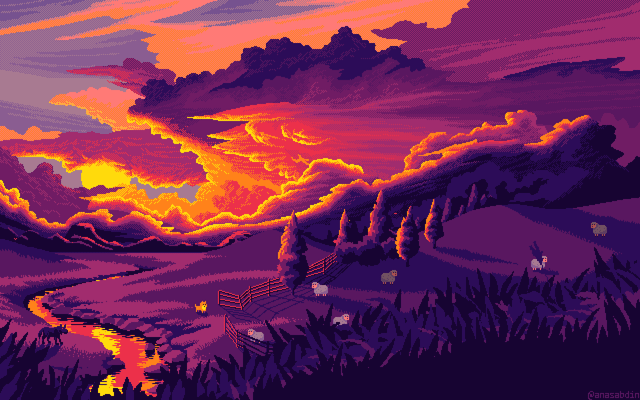

Bem-vindo ao Livro-Jogo RPG

📜 Manual de Regras do Jogo: Dados Viciados
1. Fluxo de jogo
Você tem 15 rodadas para completar seu objetivo.
A cada passo surgem eventos (baús, NPCs) ou batalhas onde você pode encontrar poções de cura ou ganhar armas melhores.
A cada 5 rodadas aparece um Chefe (rodadas 5, 10 e 15).
2. Combate (ações possíveis)
• ATACAR: usa Força + Destreza + dado da arma.
• SAIR DE MANSINHO: teste de Furtividade para escapar sem lutar.
• CONVENCER O INIMIGO: teste de Carisma para persuadir e evitar o combate.
• FUGIR: teste de Agilidade para recuar antes de levar dano.
3. Escala de Dados por Atributo
- 0 → d2
- 1 → d4
- 2 → d6
- 3 → d8
- 4 → d10
- 5 → d12
- 6+ → d20
Essa lógica vale para:
- Força (ataque/dano) - dá porrada
- Destreza (habilidade de ataque) - acerta a porrada
- Inteligência (desafios lógicos) - solta magia como se fosse uma porrada
- Furtividade (escapar) - passa sorrateiro sem ninguém ver para não levar porrada (ou não)
- Carisma (convencer) - convence a não apanhar
- Agilidade (fugir/testes de ação) - foge da porrada
4. Armas e Defesa
Cada arma tem um dado base:
- Adaga d4
- Arco d6
- Espada d8
- Machado d10
- Feitiço d12
- Cota de Malha (−1 dano e deixa uma mão livre)
- Escudo de Madeira (−1 dano)
- Escudo de Ferro (−2 dano, custa 1 pt de atributo)
- Escudo Sagrado (−3 dano, custa 2 pt de atributo)
5. Eventos e Desafios
• Baús podem conter armas raras, poções ou armadilhas.
• Desafios lógicos (perguntas/enigmas) usam Inteligência: quanto maior, mais fácil.
• Recompensas: poções de cura/mana, armas melhores, itens especiais.
6. Dicas
Seus atributos fazem diferença real:
- Destreza melhora o uso da arma;
- Força aumenta seu dado de dano;
- Inteligência facilita desafios;
- Furtividade/Carisma/Agilidade abrem rotas alternativas.
Use poções sabiamente.
Planeje seu progresso: economize pontos para os chefes.
7. Jogabilidade
- Com a ficha pronta, você cai direto na aventura.
- Eventos, escolhas e batalhas vão brotar sem aviso — igual boleto.
- Pode salvar sua história em .txt ou
mandar sua ficha pelo WhatsApp (ótimo pra esfregar na cara do amigo que disse que Ladino não presta).
⚔️ Boa sorte, e que os dados viciados estejam ao seu favor!